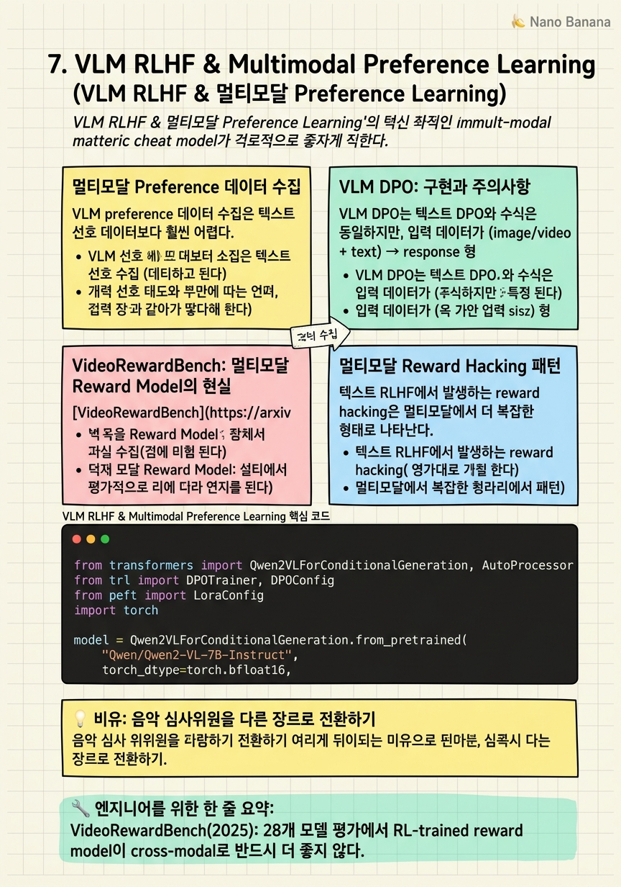

VLM RLHF & Multimodal Preference Learning

🎯 학습 목표
- 멀티모달 reward model 훈련과 텍스트 전용 reward model의 차이를 설명할 수 있다
- VLM DPO에서 preference 데이터 수집의 어려움과 해결책을 제시할 수 있다
- VideoRewardBench의 핵심 발견을 설명하고 그 함의를 이해할 수 있다
- MSRL의 multi-stage 접근법이 cross-modal generalization을 개선하는 방법을 설명할 수 있다
- 멀티모달 reward hacking의 구체적 사례를 들고 대응 방법을 제시할 수 있다
텍스트 LLM에서 RLHF가 성공적이었던 것처럼, VLM에도 동일한 접근을 적용하려는 시도가 활발하다. 그러나 멀티모달 reward modeling에는 텍스트 전용보다 훨씬 복잡한 도전이 있다.
2025년 9월 발표된 VideoRewardBench([arxiv 2509.00484](https://arxiv.org/abs/2509.00484))는 28개의 멀티모달 reward model을 1,563 curated 샘플로 평가했다. 핵심 발견: RL-trained 멀티모달 reward model이 cross-modal(image/text 훈련 → video 평가) 일반화에서 SFT-trained보다 반드시 우수하지 않다. R1-Reward는 base model 대비 15.6%p 하락했다.
이 발견은 중요한 함의가 있다: 멀티모달 reward modeling에서 'RL training = 더 좋은 reward model'이라는 가정이 틀렸을 수 있다. 특히 훈련 domain(image)과 평가 domain(video)이 다를 때 이 문제가 심각하다.
핵심 내용
멀티모달 Preference 데이터 수집
VLM preference 데이터 수집은 텍스트 선호 데이터보다 훨씬 어렵다. 텍스트에서는 두 응답을 읽고 어느 것이 더 나은지 판단하면 된다. 멀티모달에서는 이미지/비디오를 보면서 응답의 시각적 정확성을 평가해야 한다.
주요 어려움:
*시각적 정확성 판단*: '이 이미지에서 고양이가 보이나요?'에 대해 두 응답 중 어느 것이 더 정확한지 판단하려면 주석자가 이미지를 직접 확인해야 한다. 텍스트보다 annotation 비용이 높다.
*Temporal 정확성*: 비디오 temporal grounding의 경우, '12.5-24.8초 구간'이 정확한지 판단하려면 주석자가 비디오를 직접 시청해야 한다. Annotation 시간이 길다.
자동화 전략: GPT-4V/GPT-4o를 judge로 사용하여 preference를 자동 생성. 비용이 낮지만 judge model의 시각적 이해 편향이 데이터에 반영된다. 특히 비디오 temporal 정보는 GPT-4V도 정확히 판단하지 못할 수 있다.
VLM DPO: 구현과 주의사항
VLM DPO는 텍스트 DPO와 수식은 동일하지만, 입력 데이터가 (image/video + text) → response 형태다. 선호 데이터 구조:
`python
{
"prompt": [{"role": "user", "content": [
{"type": "image", "image": "path/to/img.jpg"},
{"type": "text", "text": "이 이미지를 설명하세요."}
]}],
"chosen": [{"role": "assistant", "content": "정확하고 상세한 설명..."}],
"rejected": [{"role": "assistant", "content": "부정확하거나 환각된 설명..."}]
}
`
VLM-specific 주의사항:
*Visual hallucination을 rejected로*: 이미지에 없는 물체를 있다고 하거나(환각), 잘못된 위치를 설명하는 응답을 rejected로 구성하면 hallucination 감소에 효과적이다.
*Visual token은 양쪽 공유*: Chosen과 rejected 응답은 같은 이미지를 참조한다. Visual token encoding은 한 번만 수행하고 양쪽에 재사용하여 효율을 높인다.
*길이 균형*: 텍스트 DPO와 마찬가지로 chosen이 rejected보다 일관되게 길면 length bias가 발생한다.
VideoRewardBench: 멀티모달 Reward Model의 현실
[VideoRewardBench](https://arxiv.org/abs/2509.00484)(September 2025)는 멀티모달 reward model의 체계적 평가를 제공한 첫 번째 벤치마크다. 1,563 curated 비디오 샘플에서 28개 모델을 평가했다.
핵심 발견:
| 발견 | 세부 사항 | |---|---| | RL 훈련이 반드시 cross-modal 일반화를 개선하지 않음 | R1-Reward: base 대비 -15.6%p | | SFT-trained fast-thinking model이 base 대비 개선 | SFT 방식이 video task에서 더 안정적 | | Video-specific 훈련 데이터 부재가 주요 원인 | 대부분 RL reward model이 video 데이터로 훈련되지 않음 |
이 발견의 실무적 함의: image/text preference 데이터로 RL training을 한 reward model을 video evaluation에 바로 적용하면 성능이 저하될 수 있다. Video-specific preference 데이터를 reward model 훈련에 포함시키는 것이 필수다.
후속 연구인 MSRL(CVPR 2026)은 이 문제를 해결하기 위해 multi-stage RL을 제안했다: image → video로 점진적으로 domain을 확장하면서 reward model capability를 구축한다.
멀티모달 Reward Hacking 패턴
텍스트 RLHF에서 발생하는 reward hacking은 멀티모달에서 더 복잡한 형태로 나타난다.
VLM-specific reward hacking 패턴:
*Image description verbosity*: Reward model이 상세한 이미지 설명을 선호하면, policy가 이미지와 무관한 배경 정보를 장황하게 생성한다.
*False visual grounding*: '화면에 X가 보입니다'라는 표현이 reward를 높이면, 실제로 X가 없어도 이 표현을 사용한다.
*Temporal assertion bias*: Temporal grounding reward model이 구체적 타임스탬프를 선호하면, 정확하지 않아도 타임스탬프를 무조건 출력한다.
방어 전략:
- Reward model에 visual faithfulness를 별도로 평가하는 항목 추가 - KL divergence를 시각적 hallucination 지표와 함께 모니터링 - Reference-free evaluation(이미지 없이 응답만 평가)으로 visual grounding 의존도 확인
MSRL: Multi-Stage RL for Video Understanding
MSRL(CVPR 2026, [arxiv 2603.25108])은 VideoRewardBench에서 발견된 cross-modal generalization 문제의 해결책을 제시한다. 핵심 아이디어는 image → video로 점진적으로 domain을 확장하는 multi-stage RL 훈련이다.
Stage 1: Image-level RL - Image preference 데이터로 기본 멀티모달 reward 신호 학습 - Visual grounding, object recognition, spatial understanding에 집중
Stage 2: Short Video RL - 짧은 비디오(< 30초)로 temporal 이해 도입 - Temporal consistency reward: 프레임 간 일관된 객체 추적
Stage 3: Long Video RL - 장시간 비디오(> 1분)로 복잡한 temporal reasoning - Event-level reward: 비디오 전체의 이벤트 구조 이해
MSRL은 단순히 image+video 데이터를 섞어서 훈련하는 것보다 유의미한 개선을 보여줬다. 이는 video-specific capability가 image capability 위에 점진적으로 구축되어야 함을 시사한다.
💡 비유로 이해하기
클래식 음악을 평가하도록 훈련된 심사위원(텍스트 reward model)을 재즈 공연(비디오) 심사에 바로 투입하면 문제가 생긴다. 두 장르 모두 '음악'이지만, 평가 기준이 다르기 때문이다. 클래식 기준(정확한 음표 연주, 악보 충실도)으로 재즈(즉흥성, 리듬 feel)를 평가하면 잘못된 판단을 내린다.
VideoRewardBench 발견은 이 문제의 실증이다: image/text로 훈련된 reward model을 video에 바로 적용하면 성능이 오히려 저하된다. MSRL의 multi-stage 접근법은 심사위원을 점진적으로 재훈련하는 것이다 — 클래식 기준을 유지하면서 재즈의 고유한 평가 기준을 단계적으로 추가한다.
💻 코드 예시
VLM DPO 훈련 설정과 멀티모달 preference 데이터 포맷을 보여준다. VideoRewardBench 발견을 고려해 video-specific preference 샘플을 포함하는 방법도 보여준다.
from transformers import Qwen2VLForConditionalGeneration, AutoProcessor
from trl import DPOTrainer, DPOConfig
from peft import LoraConfig
import torch
model = Qwen2VLForConditionalGeneration.from_pretrained(
"Qwen/Qwen2-VL-7B-Instruct",
torch_dtype=torch.bfloat16,
device_map="auto",
)
ref_model = Qwen2VLForConditionalGeneration.from_pretrained(
"Qwen/Qwen2-VL-7B-Instruct", # reference: SFT 완료 모델
torch_dtype=torch.bfloat16,
device_map="auto",
)
processor = AutoProcessor.from_pretrained("Qwen/Qwen2-VL-7B-Instruct")
# VLM preference 데이터 포맷
# VideoRewardBench 발견 반영: image + video 데이터 균형 포함
preference_dataset = [
{
"prompt": [{"role": "user", "content": [
{"type": "video", "video": "path/video.mp4", "fps": 1.0},
{"type": "text", "text": "이 비디오에서 주요 이벤트를 설명하세요."},
]}],
"chosen": [{"role": "assistant",
"content": "비디오 초반 0-5초에 사람이 앉아있고..."}],
"rejected": [{"role": "assistant",
"content": "비디오에서 사람이 뛰고 있습니다..."}], # 환각
},
# image preference 샘플도 혼합 (cross-modal generalization 위해)
{
"prompt": [{"role": "user", "content": [
{"type": "image", "image": "path/image.jpg"},
{"type": "text", "text": "이 이미지를 설명하세요."},
]}],
"chosen": [{"role": "assistant", "content": "정확하고 상세한 설명..."}],
"rejected": [{"role": "assistant", "content": "환각된 설명..."}],
},
]
dpo_config = DPOConfig(
output_dir="./qwen2-vl-dpo",
beta=0.1,
learning_rate=5e-6,
per_device_train_batch_size=1,
gradient_accumulation_steps=16,
num_train_epochs=1,
bf16=True,
loss_type="sigmoid", # standard DPO loss
)
trainer = DPOTrainer(
model=model,
ref_model=ref_model,
args=dpo_config,
train_dataset=preference_dataset,
processing_class=processor,
)VLM DPO에서 ref_model은 SFT 완료 Qwen2-VL-7B이다. VideoRewardBench 발견을 반영해 video와 image preference 데이터를 균형 있게 혼합했다. Visual hallucination(없는 물체를 있다고 하는 것)을 rejected 응답으로 구성하면 hallucination 감소에 효과적이다. per_device_train_batch_size=1은 비디오 처리 시 높은 메모리 소비를 고려한 설정이다.
🏭 현업에서의 평가
✅ 시니어가 보는 것
- VideoRewardBench 같은 최신 연구를 통해 멀티모달 reward model의 한계를 인식하고 있는가
- VLM preference 데이터 수집 파이프라인의 실전적 어려움을 설명할 수 있는가
- Video-specific reward hacking 패턴을 식별하고 모니터링하는 방법
- Cross-modal generalization 문제를 해결하기 위한 데이터 수집 전략
⚠️ 레드 플래그
- Image reward model을 video에 바로 적용할 수 있다고 생각하는 경우 (VideoRewardBench 반박)
- VLM hallucination과 reward hacking의 관계를 설명하지 못하는 경우
- 멀티모달 preference 데이터 수집이 텍스트와 동일하다고 생각하는 경우
🎤 예상 인터뷰 질문
- VLM temporal grounding에서 preference 데이터를 어떻게 수집하시겠나요? 자동화와 인간 주석의 trade-off는?
- VideoRewardBench의 발견이 여러분의 VLM RLHF 파이프라인 설계에 어떤 영향을 미치나요?
- 멀티모달 reward hacking을 어떻게 탐지하고 모니터링하겠나요?
✨ 핵심 요약
멀티모달 reward modeling은 아직 미성숙
VideoRewardBench(2025): 28개 모델 평가에서 RL-trained reward model이 cross-modal로 반드시 더 좋지 않다.
R1-Reward가 base 대비 15.6%p 하락
Image/text로 RL 훈련한 reward model을 video에 적용하면 오히려 성능이 떨어질 수 있다.
Video-specific 훈련 데이터가 핵심
Reward model 훈련에 video preference 데이터를 명시적으로 포함해야 video evaluation이 가능하다.
MSRL: Image→Video 점진적 확장
Image RL → Short video RL → Long video RL 순서로 단계적으로 domain을 확장하면 cross-modal 일반화가 개선된다.
VLM hallucination = preference learning 기회
환각 응답을 rejected로, 정확한 응답을 chosen으로 구성하면 DPO로 hallucination 감소가 가능하다.
Visual token 공유로 DPO 효율화
Chosen과 rejected가 같은 이미지를 참조하므로 visual encoding을 한 번만 하고 재사용한다.
Video temporal bias 모니터링 필수
'항상 타임스탬프를 출력하는' 패턴이 reward hacking의 신호다. Negative sample 비율과 타임스탬프 분포를 모니터링한다.